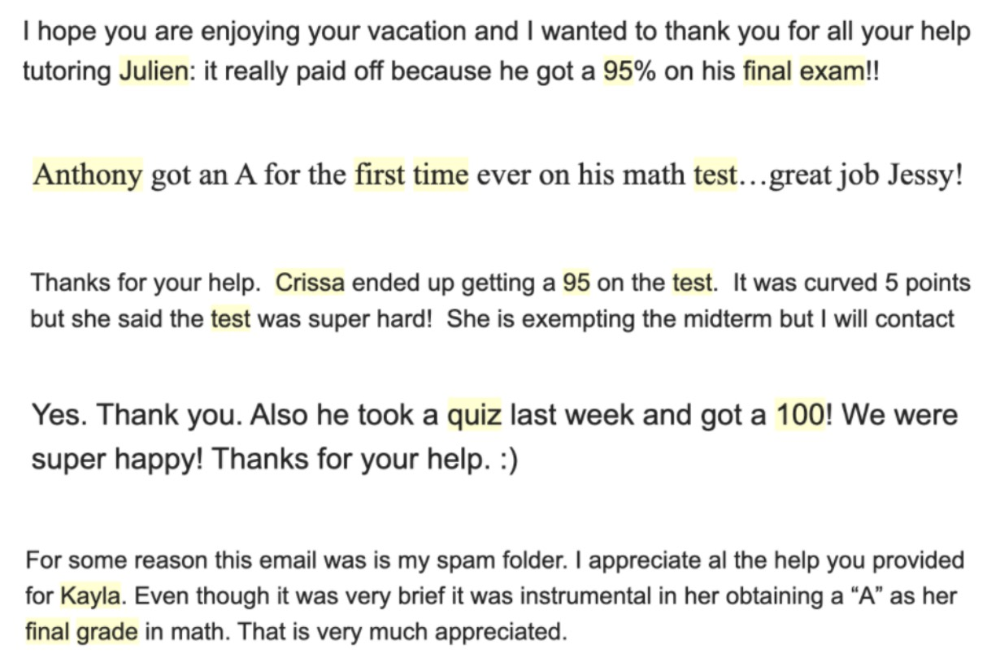

Success Stories
Hi jessy, I just wanted to reach out and let you know that I graduated today! I also wanted to share a surprise...I got a math award this year!!! I'll send you pictures of it with the description, too. Just wanted to thank you for all you've done with me all these years; more than just a tutor, you've been a mentor to me. Thank you again and have an amazing and hopefully restful summer.
Hi Jessy! Just wanted to thank you so much for helping me get through my very challenging math class this year! I ended up with an A+ for the year, and you were instrumental. I look forward to working with you again next year for Ap calc bc and ap stat! Have a great summer!!
Jessy
Thank you for successfully getting Aaron through Algebra II.
Hi Jessy, I just wanted to reach out and say thank you for all the support you gave me throughout pre-calc. I forgot to tell you but I got a 95 on my final, and felt a lot better about my understanding! Thank you so much for your continued patience and encouragement.
By the way her last test score was a big improvement, so thank you!
Hi Jessy! Hope your summer is going well!
Just wanted to let you know about your great work with Roan: with the SAT and roan got a 5 on AB calc!
Looking forward to working with you on BC calc and AP stats! Thanks so much
Hi Jessy! Just wanted to let you know I am going to Duke! Thank you so much for all of your help this year and last! It really helped me get to this point!
Hi! just wanted to let you know that I got a 5 on the BC exam, thank you for your help!
hi just wanted to let you know i got a 5 on the calc ab ap exam! thank you for your help
Hi Jessy, hope all is well. Thank you for your guidance and support to Vidhya. She couldn't have done it without your help😊
I got an 89 on my test !! Thank you Jessy !!!!
Jessy! I did it I got the B!! Thank you so much for your help I really couldn't have done it without you !!!
Thank you earnestly
Really I cannot stress this enough
Yes we are thank you. Caroline received an A last exam. Semester final is tomorrow. Enjoy the holiday season !
I got a 91 on the chapter 3 test
Tutored Students From

We have hired Jessy as a tutor for our son Julien over 3 years ago when he had to skip a math level during his sophomore year: Jessy was highly recommended to us and we were so thrilled with our son's progress after he first helped tutor him in Algebra and then for Geometry the following year. We loved how patient and approachable Jessy was and our son requested to keep him as his tutor. When it was time to study for the ACT, Jessy tutored our son again and was able to bring his score up over 3 points in a few months! We have already referred Jessy to our friends and we highly recommend him!
- Delaware Valley Friends School Parent
I am a college student at Sacred Heart University. In high school and the first two years of college, I struggled greatly with the concepts of algebra and pre-calculus. Jessy provides a very good experience for tutoring. Unlike most tutors, Jessy teaches rather than reviews. When answers are difficult, he will not just give you the answers, he will walk you through every step that was covered in the session or previous sessions so you can understand the concept rather than just having the answer. I recommend Jessy Chen’s services to anyone who is struggling with math. I learned more in an hour session with Mr. Chen than I did in 2 years' worth of algebra in high school.
- Sacred Heart University Student
My daughter struggled with online learning in calculus. Jessy was professional and provided her with clear, concise instruction. She was able to process the instruction and understand the concepts to allow her to improve in her coursework and tests. He gives students the tools to learn and understand. He also gives parents feedback. She made a B, which she was thrilled about, as the beginning of the semester her grades were lower. He does not do the problems for the students; he walks them through so they can obtain the concepts steps, and confidence to master the problems and retain the information. Worth every penny!
- Gonzaga University Parent
Jessy was instrumental to my kids excelling in math this year. He broke down very hard concepts in Pre-Calculus honors and Math 1 and made my kids truly understand the material in a way that their teachers just couldn’t. As a result they felt so much more comfortable and prepared for their tests. My kids always loved their sessions with Jessy because they knew he would set them straight and they looked forward to working with him. As a parent, I loved that he was professional and organized and so easy to schedule sessions with. We look forward to using him next year for AP Calculus AB and Math 2.
- North Carolina Parent